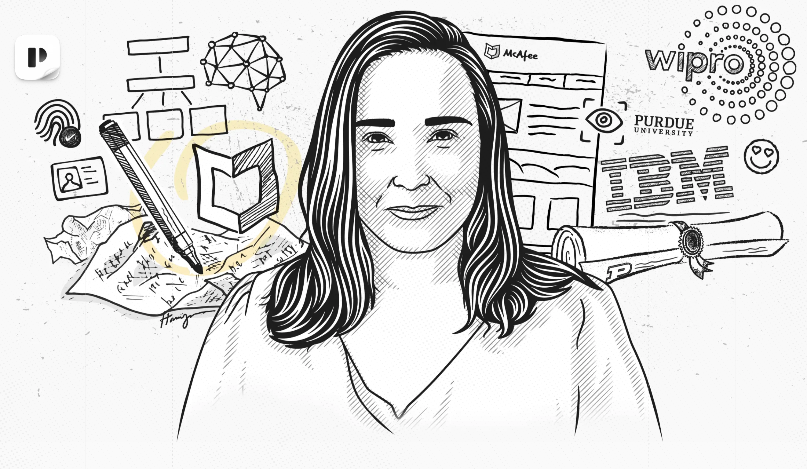
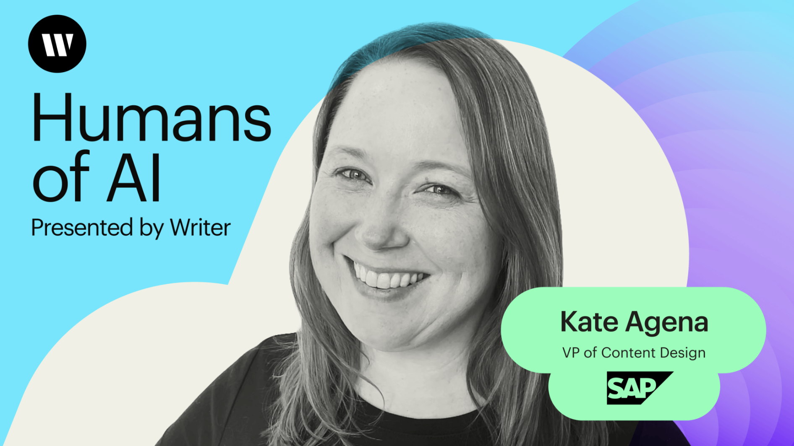
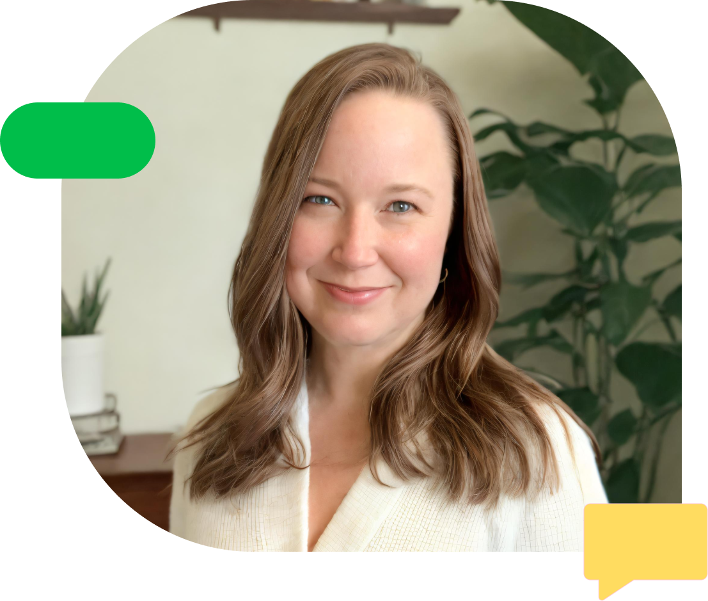
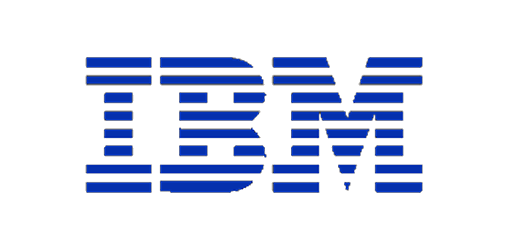
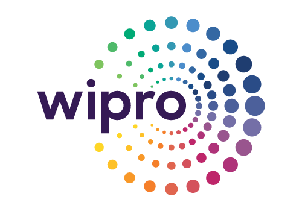
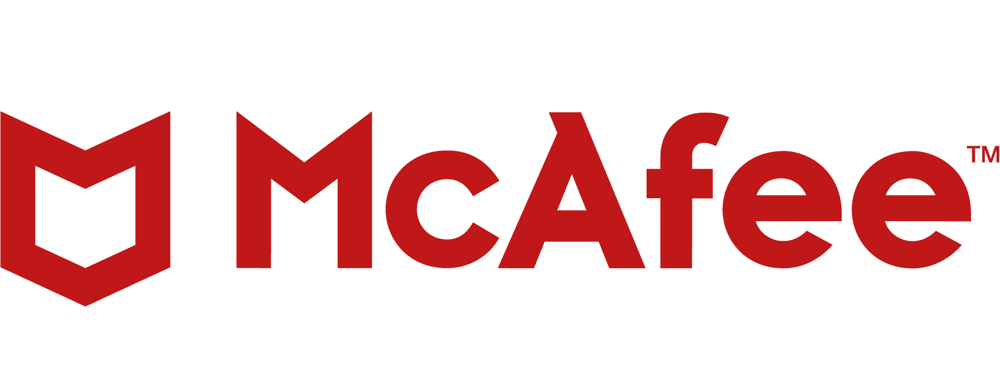

Hello. I'm Kate.
I'm passionate about creating culture, strategy, and systems that produce consistent, brand-driven, human-centered end-to-end content experiences.
I use human-centered culture and tech-centered optimizations to improve content quality and consistency across marketing, product, engineering, and support.
Most organizations are highly-siloed with each function focusing solely on their own metrics and results. While everyone might be aware of or abiding by some set of brand guidelines, writing is highly subjective.
Building a culture around writing quality through some kind of community of practice is a start, but collaboration around a shared tool, such as an AI writing assistant, can be the mechanism that solidifies that connection. Beyond the benefits of having a shared interest in training the tool, everyday use of the assistant brings the group's guidance to the writer where they are. No more expecting writers to refer to a style guide or design system.
I design future-ready centralized content orgs with separate teams focused on foundations, growth/optimization, and innovation.
Content strategy builds out the design system with guidance and patterns to support end-to-end content development, while their ops partner focuses on setting up the right tooling to support efficient, consistent use of the design system.
With these foundations ready to use, content designers can put their focus into understanding and optimizing the products they are working on.
Finally, another team focuses on what's on the way — conversation design that incorporates GenAI, training LLMs on product voice and tone, and exploring how AI opens new possibilities for personalization.
I rely on a combination of content documentation and patterns in the design system along with tools, like the AI writing assistant Writer, to support end-to-end consistency across a company. Without relevant and flexible guidance in context, it's unlikely writers will be able to apply suggestions.
Additional tech-centered solutions can bring consistency to a new level. With string management tools, you can dramatically reduce development and translation timelines and increase your ability to change your content as needed. These tools also allow for content to be treated as components for reuse. Once your reusable content is tested and optimized, you have a system in place that supports clarity, consistency, and even lowers development and translation costs and timelines.



With decades working to elevate writing professions, Kate's content design origin story started with a PhD from Purdue University's Rhetoric and Composition program before joining IBM's legendary User Technology group at the Silicon Valley Lab, just as DITA became an OASIS standard.
Her 2008 research asserted that technical communicators could use the emergence of iterative software development processes to influence the design process on behalf of the user from the earliest stages.
She's brought this same vision to content design, where she built the UX product content org at McAfee, where her team was present from the start and actively led the design process. She is now VP of Content Design at SAP.
Kate is also the founder of Content Design Leaders, a membership community that connects UX content design leaders to collaborate to advance the field and their own careers.


